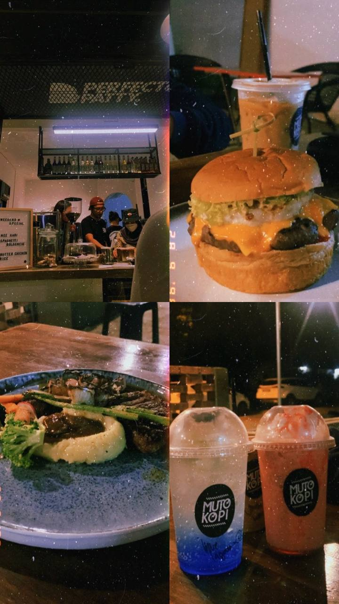
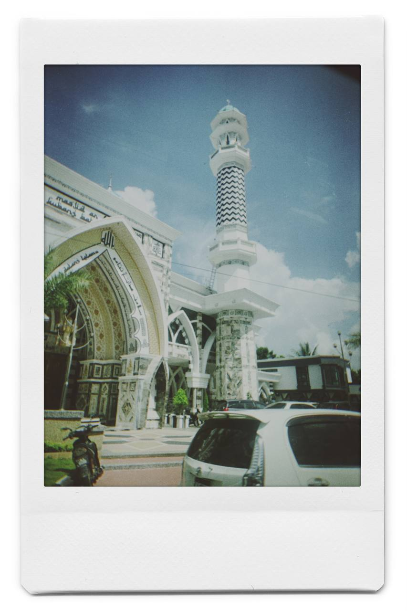
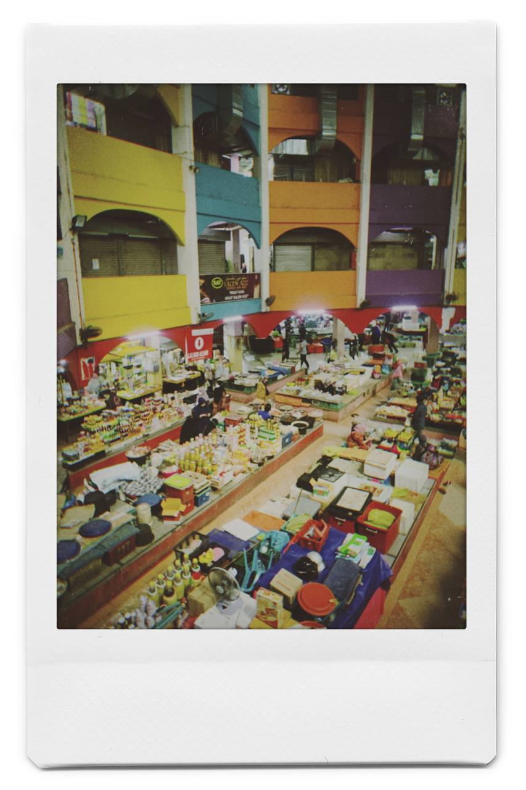
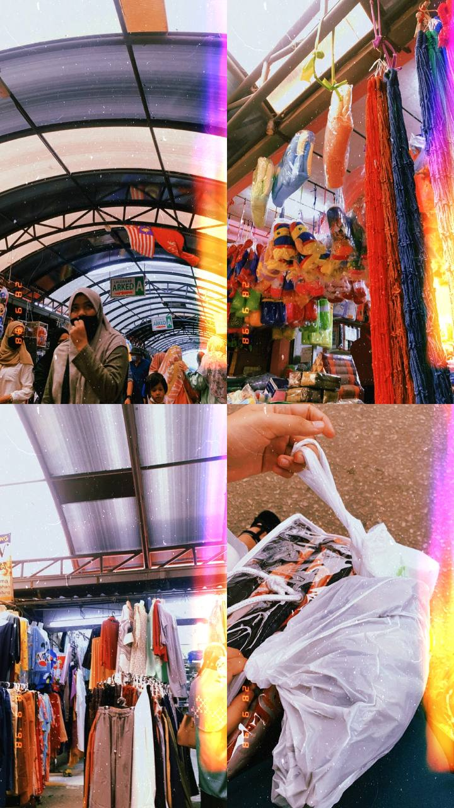

Amirah Online Resume
I am a conscientious, confident, and self- motivated person. I love to Travel, food Hunting, cooking and so on. I am able and willing to learn new skill and knowledge in a short period.
I enjoy reading books, generally including information about natural history and the economy. I find that reading is beneficial to improve my general knowledge and provides me with an opportunity to spend some time on my own. Inaddition to this, I have an enthusiasm in voicing out new ideas and built up rapport with others.
Summary



